Positive:Feed
Positive:Feed
A place for all of us who feel that the news is so messed up nowadays!
If you'd like to, you can

-
Good News in History, July 27
1 year ago today, the largest repatriation of artifacts, 17,000 in all, was sent from the U.S. State Department back to Baghdad. It was a collection of confiscated contraband, as looters continually d...
-
How to Save An Elephant With CPR? Jump Up and Down on its Chest to Revive Her (Watch)
A truly staggering effort saw a mother and baby elephant rescued from a deep concrete pit in Thailand, during which a veterinary team had to perform elephant CPR. In torrential monsoon rains, group...
-
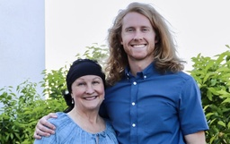
She Lost Her Hair Battling a Brain Tumor. Her Son Grew His Hair out to Make Her a Wig
When an Arizona mom lost her hair during a third brain-cancer battle, a shaggy-maned son stepped up, shears in hand, to offer a solution. Growing golden luscious locks out past shoulder length, he ch...
-
What Was This Strange Pink Glow Over Victoria, Australia?
Last week, a eerie pink glow lit up the sky above a small town in Australia, sparking mild concerns about an alien invasion, or at least that the locals had missed the memo of Season 5 of Stranger Thi...
-
100 Million-Year-Old Footprints of Giant Dinosaur Found at Restaurant in China
Among the great fossil beds of the world, China is up there, and nowhere else on earth can boast as many fossilized dinosaur footprints. However people might expect to find them in a remote desert, n...
-
Good News in History, July 26
94 years ago today, Stanley Kubrick was born. Widely considered one of the greatest filmmakers of all time, his films, almost all of which are adaptations of novels or short stories, cover a wide rang...
-
Livin’ Good Currency Ep. 19: Bill Glaser There’s an Entrepreneur Inside All of Us
The Lesson: What makes an entrepreneur? Humanity. We are all entrepreneurs. Our entire lives are a sequence of people trying to sell us ideas, opinions, values, as well as goods and services. People a...
-
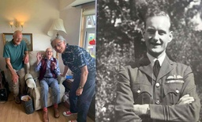
D-Day Pilot Celebrated Turning 102 Attributing Longevity to ‘Art, Music, Good Food and the Finest Wine’
A D-Day pilot celebrated turning 102, and attributes his longevity partly to a love of fine wine, among other pleasures. Harry Gamper, who turned 102 on July 20th, missed his 100th birthday party due...
-
Gardening Can Lift Your Mood Even if You’ve Never Done it Before and Have No Mental Health Issues
There’s a deep satisfaction that arises from tending a garden, so deep that it can enliven even those who don’t need to be, and even those who don’t know how, a new study shows. A pilot, randomized-c...
-
TikTok Creators Have Been Banned From Sacred Sites In Nepal For Being ‘Nuisances’
Describing them perfectly as “nuisances,” Buddhist monks in Nepal are banning TikTok video creators from using their country’s religious heritage as a stage for the popular social media app. There’s ...
-
25-Year-Old Runs into Burning Home and Saves 5 Kids–Gets Rewarded With $500K and ‘New Lease on Life’
A man is being honored by a city as a hero after he charged into a house that had turned into a raging inferno to rescue a young girl. A late-night argument was his girlfriend had a disgruntled 25-ye...
-
Good News in History, July 25
25 years ago today, K.R. Narayanan was sworn in as President of India, fulfilling Gandhi’s dream by becoming the first leader from an “untouchable” caste. In his inaugural, after receiving 95 percent...
-
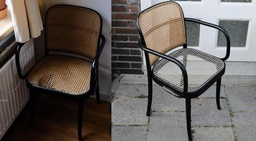
Dutch Are Reducing Waste By Fixing Broken Objects With Online Local Barter Network-And You Can Too
Finding someone who can fix a broken piece of furniture, mend clothing, or repair a family treasure has become easier thanks to a new online platform. The guilder is a repair exchange platform, enabl...
-
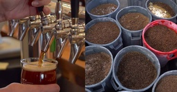
From Beer to Biogas: Creating Green Energy Using Brewer’s Grain Farm Waste
A Pennsylvania farm has partnered with a nearby microbrewery to create an alternative fuel produced with brewer’s waste and organic matter. The Dickinson College Farm in Pennsylvania joined with Moll...
-
Good News in History, July 24
111 years ago today, American academic and explorer Hiram Bingham III, after being guided by indigenous farmers, became the first Westerner to lay eyes on Machu Picchu. Set high on a peak in the Ande...
-
7 Healthy Habits Can Almost Halve Our Risk of Dying From Stroke and Protect Against Alzheimer’s
Seven healthy habits can almost halve people’s risk of suffering a life-threatening stroke, according to new research. They include being active, eating better, losing weight, quitting smoking and ma...
-
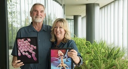
When Antibiotics Failed, She Found a Natural Enemy of Superbug Bacteria to Save Husband’s Life
Tom Patterson was dying in a U.S. hospital from a massive bacterial infection he’d contracted while traveling in Egypt. Doctors gave him a prognosis of days. Fortunately, his wife, Steffanie Strathde...
-

Your Inspired Weekly Horoscope From Rob Brezsny: A ‘Free Will Astrology’
Our partner Rob Brezsny provides his weekly wisdom to enlighten our thinking and motivate our mood. Rob’s Free Will Astrology, is a syndicated weekly column appearing in over a hundred publications. H...
-
Good News in History, July 23
On this day, 130 years ago, Emperor Haile Selassie was born. One of the seminal figures in Ethiopian history, he was a member of the Menelik dynasty that traced its ancestry to the union of King Solom...
-
Berlin’s Derelict Airport Undergoes Transformation to Become a Sustainable Neighborhood
With 580 acres of ex-airport real estate now available, the area is being dreamed of as a sustainable neighborhood of wide open green spaces, bike lanes, and affordable efficient housing. After old T...
-
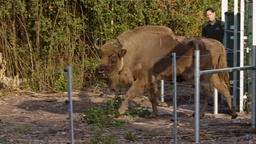
Wild Bison Return to UK After Thousands of Years – And Are Ready to Tear S*!# Up
Wild European bison have been released in southeast England where they will roam unperturbed by humans on Great Britain for the first time in 6,000 years. It’s the culmination of several years of pla...
-
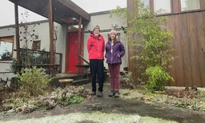
More Young Adults are Renting Next Door to Retired Folks – With Intergenerational Benefits
The latest housing trend in America has nothing to do with décor, or “open concepts,” but rather the rise of intergenerational roommates. Described as separated by at least one generation, intergener...
-
A ‘True Lassie’ Helped a Rescue Team Find His Owner Who Fell 70 Feet in Tahoe Forest
A Nevada man may owe his life to the intelligence of his border collie after the real-world “Lassie” led search and rescue to him. The man had fallen 70 feet down a steep slope in the Tahoe Forest, b...
-
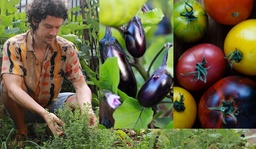
Good Gardening Week 3: Which Are Your Go-To Plants or Flowers? — Share Tips and Photos
Welcome back to Good Gardening! In our Week 2 discussion thread, we wanted to find out what people were growing at this very moment. We took it to social media and shared photos… Brandi Lanai took th...
-
Good News in History, July 22
59 years ago today, Philadelphia’s first heavyweight boxing champion, Sonny Liston KO’d Floyd Patterson in a rematch of the bout that the year before won him the belt. The fight went much the same way...
-
Botswana Cuts HIV Transmission Rates to Children from 40% to 1% in ‘Groundbreaking Achievement’
The WHO recently-celebrated Botswana for their “groundbreaking achievement” of stopping the transmission of HIV between moms and their newborns. The national program has reduced such occurrences from...
-

Large Dose of Iron Could be Used to Kill Off Drug-Resistant Prostate Cancer, Scientists Believe
Large doses of iron could be used to kill off drug-resistant prostate cancer cells, scientists believe. This could be especially prevalent since while there are a variety of treatments, and these usu...
-
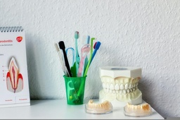
These Micro-robots Can Clean Teeth By Shapeshifting into Toothbrush or Floss Forms
In a few years, you may just be throwing away your dental care kit, replacing it with a totally science-fiction shapeshifting robot that acts as a toothbrush, rinse, and dental floss in one. The tech...
-

Duck alla Pest Control—This Horde of Ducks Have Been Protecting 140 Acres of Vineyards for a Half Century (WATCH)
An antique vineyard in South Africa has ditched toxic pesticides for a horde of hungry ducks, as they attempt to make their wines more sustainable. In reality, Vergenoegd Löw, the wine estate outside...
-
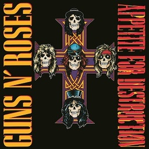
Good News in History, July 21
35 years ago today, Guns N’ Roses released their debut album, Appetite for Destruction. With the singles Welcome to the Jungle, Paradise City and Sweet Child o’ Mine, the album peaked at number one on...
-
The World’s First Boat Elevator Helped Turn Scottish Canals Into Green Veins of Joy
After more than a century of disuse, Scotland’s old coal barge canals have been transformed into peaceful, green arteries of recreation and birdlife. Part of a repurposing of commercial canals across...
-
Kākāpō Population Soars to its Highest Number in Almost 50 Years
A conservation program that started in the 1970s for the New Zealand Kākāpō has increased the crazy parrot’s numbers to the highest recorded since it began. Following the second-most successful breed...
-
These Baby Shoes Dissolve In Water After Your Infant Outgrows Them, Saving Space in Landfills
A husband and wife in Oregon have designed baby shoes that melt away into water after an infant outgrows them. The silky fabric is actually made of a kind of water-soluble plastic that covers deterge...
-
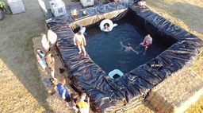
Baling Water: These Young Farmers Built a DIY Swimming Pool With Hay Bales to Beat the Heatwave
A group of farmers found an epic way to keep cool—by making a DIY swimming pool using hay bales. Jack Smith and his friends spent four days building their own pool so it was ready in time for the hea...
-

Good News On This Day in History
58 years ago today, the famous frontman Chris Cornell was born in Seattle, Washington. Fronting Soundgarden, Temple of the Dog, and Audioslave, Cornell sold 14.8 million albums, 8.8 million digital so...
-
Scientists Had Never Seen This Elusive Whale Alive—Until Now
It’s a common refrain to say we know more about the surface of Mars than we do about the deepest parts of our oceans, well a recent paper has shown that maxim extends to the creatures that live there ...
-
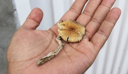
Psilocybin Microdosing Study Finds Improved Mental Health and Psychomotor Dexterity in Those Over 55
What happens when a bunch of scientists put a study group of older people together and give them all psychedelic mushrooms? As it turns out the world’s largest study on microdosing found they get more...
-
Man Spends 13 Years Transforming Barren Backyard into Terraced Japanese Garden – LOOK
A man has spent 13 years transforming a barren backyard at his terraced city home into an incredible Japanese garden. Martin Fitton, 54, fell in love with Japanese gardens after first visiting one on...
-
Good News in History, July 19
46 years ago today, Sagarmatha National Park was established in Nepal as the country’s first National Park. Enshrining the summit and breadth of the mountain known in the west as Everest, it’s total a...
-
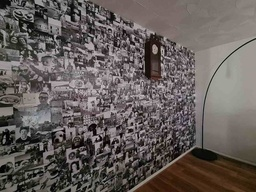
Family Recovers from COVID Trauma with Mom’s Massive Floor-to-Ceiling Photo Montage in Living Room
An English mom has turned her entire living room wall into a photo montage to remind her family of happier times in a bid to help them cope with COVID trauma. Louise Whapshott, 46, wanted to celebrat...
-
Aquatic ‘Superplants’ Are Local Food for Cows That Lead to Lower Emissions
Using a water-born crop that grows at breakneck speed, an innovative cattle feed startup could reduce livestock emissions in a variety of ways. By reducing methane emissions from the bovine’s digesti...
-
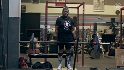
78-Year-old Iron Woman Is Powerlifting Champion Who Does 400 Squats and Holds 19 World Records
It’s Monday morning. GNN has your inspiration fuel for the week. Nora Langdon is a world champion powerlifter at 78-years-young, holding 19 world records, with personal records of 413 pounds in the s...
-
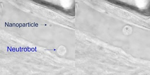
Microscopic Robots Made from White Blood Cells Could Treat and Prevent Life-Threatening Illnesses
White blood cells have been made into a kind of micro-robot that could treat and prevent life threatening illnesses, according to scientists in China. The tiny, laser-guided machines are made from wh...
-
Good News in History, July 18
688 years ago today in Medieval times, the bishop of Florence blessed the first foundation stone for the new campanile (bell tower) of the Florence Cathedral, designed by the artist Giotto di Bondone,...
-
Fantasy Wonderland of 500,000 Balloons Gives Sick Kids Most Uplifting Fundraising Event Ever – LOOK
On Friday and Saturday, a hotel in Orlando came alive with vibrant colors and breathtaking flair after more than 400 balloon artists from around the world constructed a wonderland to benefit sick chil...
-
Teen Finds Woman’s Purse and is Rewarded With $17,000 After He Delivers it to Her Door
A 17-year-old teen in San Diego returned a purse left in a grocery store parking lot—and although he expected nothing in return, hundreds of strangers have offered him a big reward. Adrian Rodriquez ...
-

14 Unique Ways People Are Generating More Physical Activity in Daily Routines
A recent survey polled 2,000 U.S. adults to see how they’re staying active as their routines and lifestyles have undergone a drastic change over the past two years. 73% are eager to increase their ph...
-
Tourist Survives 18 Hours at Sea By Clinging to a Soccer Ball
Strong currents swept a 30-year-old man out to sea while he was on a beach vacation—but reminiscent of the movie Castaway, he now has a soccer ball to thank for his survival. The Macedonia man spent ...
-
Good News in History, July 17
305 years ago today, Water Music by George Frideric Handel premiered literally on the water; the River Thames to be precise. A collection of orchestral movements, often published as three suites, Wate...
-
McDonald’s Owner Closes for Renovations – But Keeps Paying All Employees For 3 Months
A 90-year-old owner of multiple McDonald’s franchises has done an extraordinary good deed for his employees, who were at risk of losing their livelihoods. When news broke that Tony Philiou was set to...
-
New study: music helps reconnect dementia patients with their memories
Music is woven into the very fabric of human evolution — some experts even surmise that it’s likely humans sang before we spoke. Music plays an essential communicative role even today. It connects us ...
-
Brown bear population in the Pyrenees makes a bear-y impressive comeback
Back in 1996, the addition of three bears from Slovenia launched a conservation plan to reintroduce the near-extinct brown bears in the Pyrenees. The brown bear population was already sparse, and unfo...
-
The mystery of glowing deep sea coral is a mystery no longer
The dark depths of the ocean are still shrouded in mystery for us humans. Despite our species’ tenacious approach to figuring it all out, we have yet to understand so many facets and elements of the p...
-
6 Ways to combat jet lag naturally
As the summer rounds out, many of us have started to travel again for work and leisure, and we’re again experiencing the frustrating effects of jet lag. Traveling outside of our usual time zone can be...
-
Cooling bamboo system is a green alternative to air conditioning
As is happening all over the planet, the number of sweltering days affecting people each year in Vietnam has grown significantly in recent years as a result of climate change. Using air conditioning m...
-
Scientists find bear serum could supercharge our muscles, no exercise required
As many faithful gym-goers, as well as those of us who insist on always using the stairs, would say: if you don’t use it, you lose it. Right? Well, new studies led by scientists from Hiroshima Univer...
-

As the weather warms up, here’s how to help animals handle a heatwave
Right now, much of Europe and North America are experiencing ongoing heatwaves with record-breaking temperatures. It’s not just humans that are struggling to cope. Yes, it’s getting hot in here—but ta...
-
“Count Down” ー Protecting our bodies and our fertility in the modern age
“Hormones get no respect. We think of them as the elusive chemicals that make us a bit moody, but these magical little molecules do so much more.” – Susannah Cahalan, Author, Brain on Fire Most of us...
-
U.S. Capitol’s statue collection unveils first statue of Black American
For many cultures and countries, working through heavy social issues like racism or genocide means confronting the ugly scars that have been left behind by brutal histories. In the case of the United ...
-
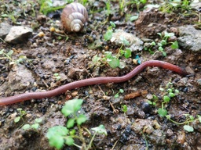
Earthworms: a natural solution to farms’ wastewater
Royal Dairy in Royal City, Washington has a problem that’s common to dairy farms. The hundreds of millions of gallons of water used by their dairy and beef cows eventually become wastewater carrying a...
-
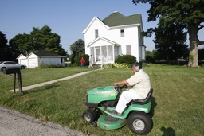
Goodbye to grass? More Americans embracing ‘eco-friendly’ lawns and gardens : UpliftingNews
Press J to jump to the feed. Press question mark to learn the rest of the keyboard shortcuts Search within r/UpliftingNews r/UpliftingNews r/UpliftingNews...
-
House Approves Marijuana And Psychedelics Amendments As Part Of Must-Pass Defense Bill : UpliftingNews
Press J to jump to the feed. Press question mark to learn the rest of the keyboard shortcuts Search within r/UpliftingNews r/UpliftingNews r/UpliftingNews...
-
First 100,000 KG Removed From the Great Pacific Garbage Patch : UpliftingNews
Press J to jump to the feed. Press question mark to learn the rest of the keyboard shortcuts r/ UpliftingNews...
-
Oregon man who started wildfires ends up tied to tree by locals, sheriff says : UpliftingNews
Press J to jump to the feed. Press question mark to learn the rest of the keyboard shortcuts Search within r/UpliftingNews r/UpliftingNews r/UpliftingNews...
-
An Australian rugby league club rolled out pride jerseys to be worn in 1 game. After 7 players boycotted that game, the masses got together and sold out the kit within hours to show support : Upliftin
An Australian rugby league club rolled out pride jerseys to be worn in 1 game. After 7 players boycotted that game, the masses got together and sold out the kit within hours to show support...
-
Taxing churches: Religious institutions in Iqaluit no longer exempt from property tax
Press J to jump to the feed. Press question mark to learn the rest of the keyboard shortcuts r/ UpliftingNews...
-
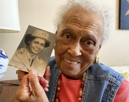
102-year-old WWII veteran from segregated mail unit honored : UpliftingNews
Press J to jump to the feed. Press question mark to learn the rest of the keyboard shortcuts Search within r/UpliftingNews r/UpliftingNews r/UpliftingNews...
-
Earliest known animal predator fossil discovered, named after Sir David Attenborough : UpliftingNews
Press J to jump to the feed. Press question mark to learn the rest of the keyboard shortcuts Search within r/UpliftingNews r/UpliftingNews r/UpliftingNews...
-
Jonathan, A 189-Year-Old Tortoise, Was Photographed In 1902 And Is Still Alive Today : UpliftingNews
Press J to jump to the feed. Press question mark to learn the rest of the keyboard shortcuts Search within r/UpliftingNews r/UpliftingNews r/UpliftingNews...
-
Dogs might be able to 'see' with their noses, a new study suggests : UpliftingNews
Dogs might be able to 'see' with their noses, a new study suggests...
-
The nature reserve manager hoping to inspire women : UpliftingNews
Press J to jump to the feed. Press question mark to learn the rest of the keyboard shortcuts Search within r/UpliftingNews r/UpliftingNews r/UpliftingNews...
-
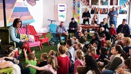
Online outburst over Drag Queen Storytime at Redemption Rock overcome by positivity : UpliftingNews
Press J to jump to the feed. Press question mark to learn the rest of the keyboard shortcuts r/ UpliftingNews...
-
A few jaguars now roam the Arizona borderlands—why that’s a big deal : UpliftingNews
Press J to jump to the feed. Press question mark to learn the rest of the keyboard shortcuts Search within r/UpliftingNews r/UpliftingNews r/UpliftingNews...
-
Civilian medic commands respect on Ukraine war's front lines : UpliftingNews
Press J to jump to the feed. Press question mark to learn the rest of the keyboard shortcuts Search within r/UpliftingNews r/UpliftingNews r/UpliftingNews...
-
No More Pet Store Puppies? New York May Finally Ban Sales. : UpliftingNews
Press J to jump to the feed. Press question mark to learn the rest of the keyboard shortcuts Search within r/UpliftingNews r/UpliftingNews r/UpliftingNews...
-

Tony Dow Alive: Wife And Management Team Announced Death In Error : UpliftingNews
Press J to jump to the feed. Press question mark to learn the rest of the keyboard shortcuts r/ UpliftingNews...
-
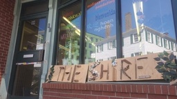
City of Saint John to provide money to LGBTQ youth safe space : UpliftingNews
Press J to jump to the feed. Press question mark to learn the rest of the keyboard shortcuts Search within r/UpliftingNews r/UpliftingNews r/UpliftingNews...
-
Here’s how much a James Webb Space Telescope stamp will cost you : UpliftingNews
Press J to jump to the feed. Press question mark to learn the rest of the keyboard shortcuts Search within r/UpliftingNews r/UpliftingNews r/UpliftingNews...
-

Canada Can Hit 100% Zero-Emission Electricity by 2035 Without Nuclear, CCS, Report Finds : UpliftingNews
Press J to jump to the feed. Press question mark to learn the rest of the keyboard shortcuts Search within r/UpliftingNews r/UpliftingNews r/UpliftingNews...
-
Joni Mitchell wows with surprise set at Newport Folk Fest : UpliftingNews
Press J to jump to the feed. Press question mark to learn the rest of the keyboard shortcuts r/ UpliftingNews...
-
Almost 40 gigawatts of solar expected to be installed in Europe in 2022 : UpliftingNews
Press J to jump to the feed. Press question mark to learn the rest of the keyboard shortcuts Search within r/UpliftingNews r/UpliftingNews r/UpliftingNews...
-
Uninterrupted, Drag Queen Story Hour in Kensington 'Went Off Beautifully' : UpliftingNews
Press J to jump to the feed. Press question mark to learn the rest of the keyboard shortcuts Search within r/UpliftingNews r/UpliftingNews r/UpliftingNews...
-
This hiking bunny in NH is turning heads on trails and on TikTok : UpliftingNews
Press J to jump to the feed. Press question mark to learn the rest of the keyboard shortcuts r/ UpliftingNews...
-
US to plant 1 billion trees as climate change kills forests : UpliftingNews
Press J to jump to the feed. Press question mark to learn the rest of the keyboard shortcuts r/ UpliftingNews...
-
Missing dog found after Macomb County airport plane crash; 3 people recovering : UpliftingNews
Press J to jump to the feed. Press question mark to learn the rest of the keyboard shortcuts r/ UpliftingNews...
-
Oncology nurse fulfills dying patient’s wish to take in her young son when she died
A Pennsylvania oncology nurse stepped up in a big way when her terminally ill patient asked if she could adopt her only son when she died. Tricia Seaman was a nurse at Pinnacle Health Community Gener...
-
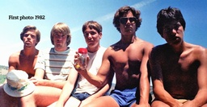
Five friends who went viral for taking the same photo since 1982 just took their latest picture
Five friends who have been taking the same photo every five years since 1982 are due for another photo, and they just shared it for the world to see. Last month, John “JD” Dickson, Dallas Burney, Mar...
-
How this man and his dog spent seven years walking in 38 countries
On May 21, 2022, a man and his dog officially ended the journey of a lifetime after spending seven years walking 48,000 kilometers around the world. Tom Turcich, from New Jersey, and his four-legged ...
-

Adopted 13-year-old girl becomes the youngest black student to gain admission into medical school in the U.S.
This 13-year-old girl from Texas just became the youngest black person ever to get accepted into medical school. In June, Alena Analeigh Wicker got into the University of Alabama‘s Heersink School of...
-
A pizza delivery guy driving by a burning home stops to rescue 5 children inside
Heroic 25-year-old man from Indiana is being celebrated for his bravery after rescuing three teens and two young kids from a raging house fire. Nicholas “Nick” Bostic, a pizza delivery driver, was dr...
-
85 It’s The Little Things Quotes to Help You Enjoy the Small Moments and Things in Life
85 It’s The Little Things Quotes to Help You Enjoy the Small Moments and Things in Life It’s the little things that matter. A small thing like a hug or a kind text message can re-energize you and tu...
-
How to Overcome Perfectionism: 6 Powerful Habits
How to Overcome Perfectionism: 6 Powerful Habits “Certain flaws are necessary for the whole. It would seem strange if old friends lacked certain quirks.” Johann Wolfgang Von Goethe “People throw aw...
-

7 Small Ways to Make This The Happiest Summer of Your Life
7 Small Ways to Make This The Happiest Summer of Your Life “Then followed that beautiful season… Summer… Filled was the air with a dreamy and magical light; and the landscape lay as if new created in...
-
Don’t Compare Your Life to Someone’s Highlight Reel
Don’t Compare Your Life to Someone’s Highlight Reel “When you are content to be simply yourself and don’t compare or compete, everybody will respect you.” Lao Tzu Today I’d like to focus on a negat...
-

How to Get More Done with (a Lot) Less Stress: 12 Daily Habits
How to Get More Done with (a Lot) Less Stress: 12 Daily Habits “Three Rules of Work: Out of clutter find simplicity; From discord find harmony; In the middle of difficulty lies opportunity.” Albert ...
-
9 Things You Need to Stop Doing to Start Living a Happier and Self-Kinder Life
9 Things You Need to Stop Doing to Start Living a Happier and Self-Kinder Life “When one door of happiness closes, another opens, but often we look so long at the closed door that we do not see the o...
-
How to Keep a Conversation Going: 8 Simple Tips
How to Keep a Conversation Going: 8 Simple Tips Do you have problems with keeping a conversation going? Do you sometimes run out of things to say? Then you’re in the right place. Because in this po...
-
11 Things That Cause Parental Abuse in Families
Parents and children have occasional conflict, which often increases during the teenage years. However, parental abuse is different because it occurs when a child seeks to cause intentional harm. This...
-
10 Signs of Ovarian Cancer Most Women Ignore
Doctors call ovarian cancer a “silent killer” because so many women do not recognize the symptoms of this type of cancer. They ignore them mainly because they get mistaken for other conditions. Learn ...
-
10 Responses if Your Partner Mistreats You
It’s not a good feeling when your partner mistreats you. You don’t have to put up with abusive behavior, though, as there are some responses for dealing with an uncaring person. These responses can he...
-
10 Exercises for Hip Pain Never to Ignore
Is bursitis cramping your style, or is the pain from your arthritis keeping you from doing the things you love? So many people live a sedentary lifestyle, and when you’re sitting at a desk all day, it...
-
10 Acne-Safe Treatments for Glowing Skin
Acne seems to follow us through life, flaring up in different ways and for many reasons. Improving your skin health requires educating yourself on your skin type and breakout triggers. You can achieve...
-
10 Things Never to Say to Someone with Low Self-Esteem
If you know someone with low self-esteem, you likely want insight into what you can say that isn’t hurtful. Saying the wrong thing can harm their well-being, even when you don’t intend it that way. So...
-
Dog Behavior Isn’t Determined by Breed, According to Vets
Everybody has their favorite dog breed. You may love a particular type for its characteristic temperament and personality. It turns out that the dog behavior you admire in your pooch may not be typica...
-
19 Reasons Never to Give an Ex False Hope
aBreaking up is hard, and it’s even worse if you drag it on. Giving a sense of false hope interferes with both of your abilities to move on. There’s no reason to make it harder when it’s already a tou...
-
15 Ways to Fall Back Asleep if Awakened During the Night
It happens to everybody once in a while. You fall asleep without trouble. But you are awakened in the middle of the night. You feel as if you just drank caffeine. It’s the dead of night, but your body...
-
10 Ways to Gain Self-Confidence from Within
Not loving yourself could affect every facet of your life. You might miss out on the best jobs, partners, or live life to the fullest. Many people who suffer from low self-confidence always end up wit...
-

Unthinking, Fast and Slow
Donald Officer, MA '89, is a strategic thinking practitioner who melds problem solving research models to help clients anticipate unexpected scenarios and opportunities while pursuing what is most mea...
-

Sit Write Share launches today
Aren Cohen, MBA, MAPP '07 is a learning specialist working with academically, motivationally and emotionally challenged students in the leading private schools in New York City. As shown in her websit...
-

MAPP Magazine: The Power of Community
The mission of the MAPP Magazine is first to keep University of Pennsylvania Master of Applied Positive Psychology Program (MAPP) alumni connected, and second to share the wide range of our applicatio...
-

The Art of Insubordination: A Review
Lisa Sansom, MAPP '10, is the owner of LVS Consulting, an independent consulting firm that helps to build positive organizations. Lisa provide services such as individual and leadership coaching, team...
-

On Doing What We KNOW is Good for Us
Yashi Srivastava, MAPP '16 is a coach, teacher, and writer passionate about helping people cultivate inner peace. While Yashi began her career teaching computer programming, her life-long fascination ...
-

MAPP Magazine Articles on Positive Psychology Applications
Check out the latest articles online in MAPP Magazine. The mission of the MAPP Magazine is first to keep Penn MAPP alumni connected and second to share the wide range of our applications of positive p...
-

August 31 is Launch Day for The Business of Race
Tomorrow a new book will be launched: The Business of Race: How to Create and Sustain an Antiracist Workplace and Why It’s Actually Good for Business by Gina Greenlee and Margaret Greenberg. At first ...
-

New MAPP Magazine on Positive Humanities
The latest issue of MAPP Magazine, published by graduates of the MAPP Program at the University of Pennsylvania, is dedicated to the Positive Humanities. The Positive Humanities is an emerging field. ...
-

Second Wave of Positive Psychology
Marta Velázquez Gil is a psychologist and researcher. She has published research in scientific journals and both national and international congresses. Her biggest interest is research on cultural ter...
-

“You’re on mute!” On Having High-Quality (Zoom) Connections
Dr. Nico Rose (MAPP '14) is a professor for organizational psychology at International School of Management (ISM) in Dortmund, Germany. He worked for Bertelsmann, Europe's largest media corporation fr...
-

5 Reasons to Stop Striving to Be Your Best Self
Do you often feel like you’re failing at motherhood? You’re not alone. A Care.com survey revealed that 80% of mothers in the United States feel stressed about getting everything done, 79% feel as if...
-

The Ultimate Guide to Storytelling in Content Marketing
I recently had the opportunity to speak again at Rocks Digital, a digital marketing conference in the Dallas Fort Worth area. I was invited to deliver a Rocks Talk, which is like a TEDx Talk, except ...
-

The J Team DVD Giveaway
It’s giveaway time again and this time, you can enter for a chance to win your very own copy of The J Team DVD. If you’re ready to show your sparkle, you can join JoJo Siwa and friends in The J Team!...
-

Swag Giveaway || The Bad Guys Movie
Hi loves! My daughters and I watched The Bad Guys movie and it was a lot of fun. So I’m hosting a giveaway to celebrate the release of THE BAD GUYS which is now available on Digital, 4K, Blu-ray and...
-

Encourage Your Child to Think Differently with EUREKA!
My daughters and I feel so blessed that we were invited to screen the new Disney Junior sensation: EUREKA! “Eureka!” is the story of a young talented girl inventor way ahead of her time who lives in ...
-

LIGHTYEAR Coloring Pages, Family Activities, and Dallas Ticket Giveaway
Well, hello loves! Disney and Pixar and their upcoming family film, LIGHTYEAR, which hits theaters June 17, invited me to partner with them to host a Fandango Code giveaway for 5 pairs of Fandango co...
-

Powerful St. Jude Prayer to Manifest Miracles
Before I share the St. Jude prayer you are looking for, I want to send you a hug. I can’t possibly know exactly how you feel, but I can definitely relate to feeling hopeless. I am grateful for God’s ...
-
Top Benefits of Learning a Foreign Language
One of the best decisions of my life was learning a second language. The benefits of learning an additional language have been tangible, not only for myself but for my children, too. I once heard som...
-
Tips to Create and Activate Your Personal Wellness Plan
Much of what I’m about to share I learned the hard way – and I’m still learning. I’ve done a lot of inner work to release the false belief that taking care of myself was selfish. If you’re here, I sus...
-
Interviews with The Garcias Cast: Everything for the Family
The girls and I screened all ten episodes of THE GARCIAS, a groundbreaking streaming series, that represents what it means to be a family. It’s a fun, happy, wholesome, and entertaining show for all ...